Contacto:
Instagram
ablaetneufs.reivaj@hotmail.com
En el desafío The Suspicious Domain de Hack The Box, investigamos el dominio alexmorgan-reviews.net, identificado como parte de una campaña de manipulación de reseñas contra TechFlow. Usando la herramienta DomainScope, analizamos WHOIS, DNS Records, Hosting y otros datos para responder 6 preguntas principales y 3 de correlación, identificando un identificador clave que conecta el dominio a la infraestructura de la campaña.
En la pestaña WHOIS de DomainScope, bajo la sección "Registrant Contact", encontramos el correo del registrante: alex.morgan@tempmail.com. Esto sugiere el uso de un servicio de correo temporal, común en operaciones sospechosas.
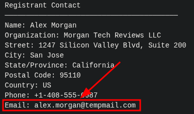 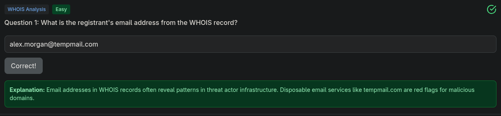En la misma sección "Registrant Contact" del WHOIS, se lista el número de teléfono: +1-408-555-0987, que incluye el código de país (+1) para EE. UU.
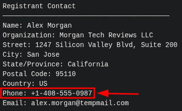 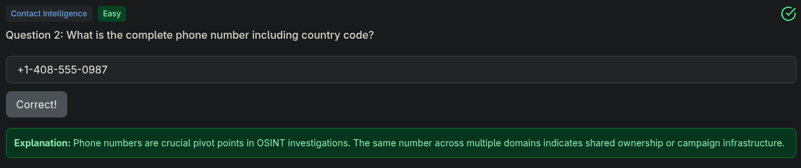En la sección "Domain Information" del WHOIS, la fecha de creación del dominio es 2024-01-20, como se muestra en la captura.
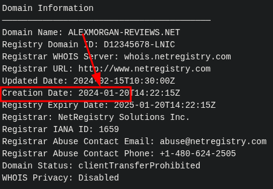 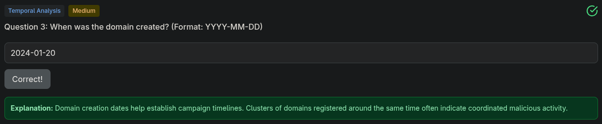En "Registrant Contact" del WHOIS, la organización registrada es Morgan Tech Reviews LLC, lo que indica una entidad posiblemente creada para encubrir la campaña.
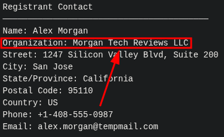 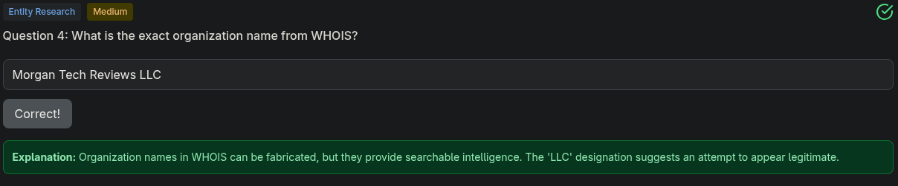En la sección "Contact Information" de DomainScope, la ciudad listada es San Jose, California, como parte de la dirección del registrante.
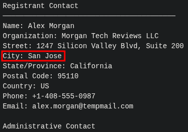 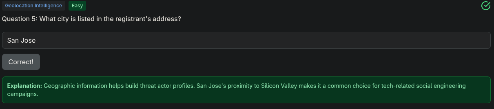En la sección "Domain Information" del WHOIS, el estado del dominio es clientTransferProhibited. Según ICANN, este estado indica que el dominio está bloqueado para transferencias, lo que podría ser una medida para aparentar legitimidad o evitar que se transfiera mientras se usa con fines maliciosos.
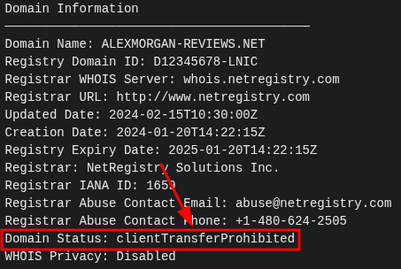 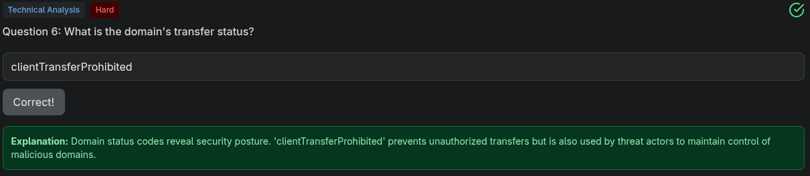El desafío indica que el dominio forma parte de una campaña de manipulación de reseñas contra TechFlow, con comentarios negativos como "Overpriced and underdelivers..." y "Terrible customer support...". Esto se deduce del contexto y la descripción del desafío.
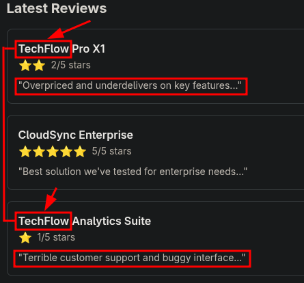 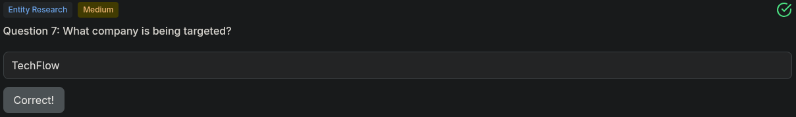El correo del registrante, alex.morgan@tempmail.com, indica que el actor usa TempMail, un servicio de correo electrónico temporal, como se ve en la sección "Contact Information" y confirmado en la página principal de DomainScope.
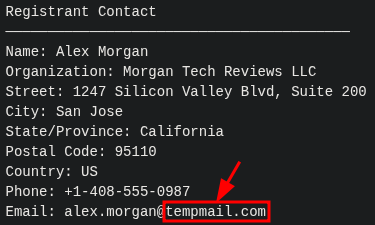 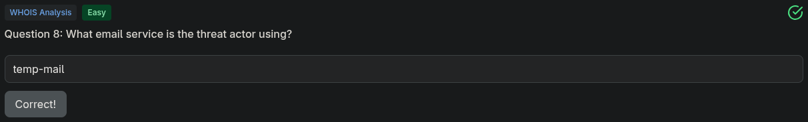En la pestaña "DNS Records" de DomainScope, la IP 185.199.108.153 aparece repetida 4 veces, asociada a GitHub Pages, lo que indica que el dominio usa 4 configuraciones de IPs de GitHub Pages.
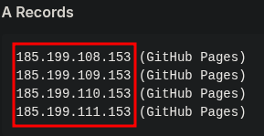 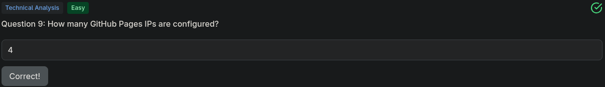